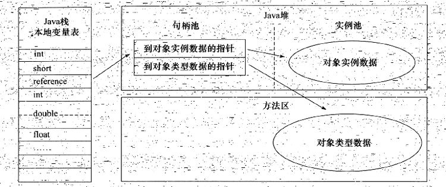
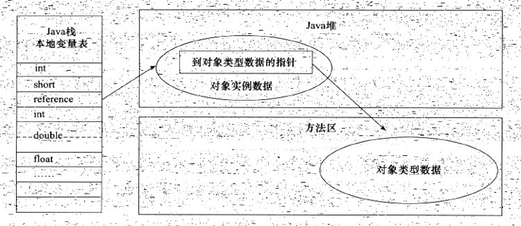
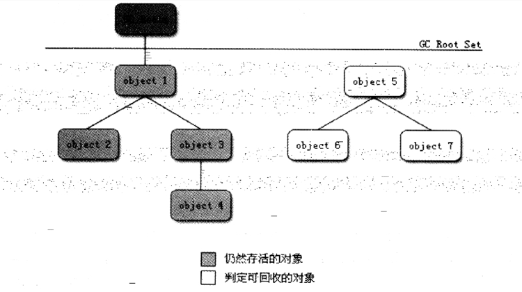
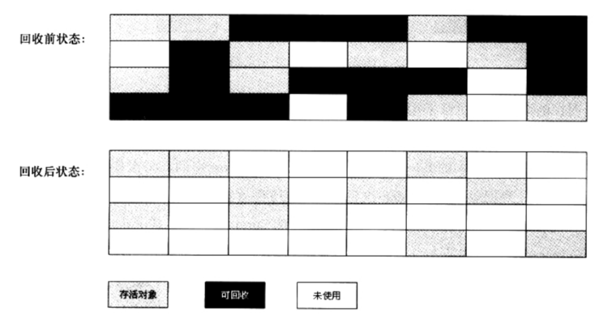
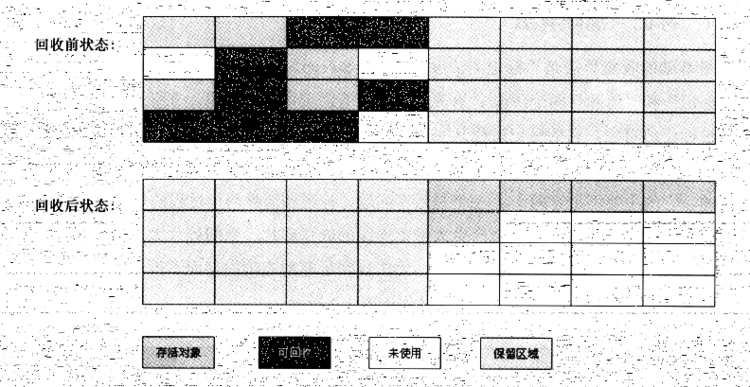
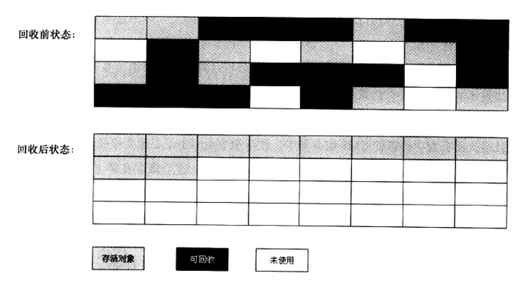

java虚拟机
简介
Java虚拟机一种用于计算机设备的规范，可用不同的方式（软件或硬件）加以实现。这个规范描述了一个指令集，一组寄存器，
一个堆栈，一个“垃圾堆”和一个方法区。一旦一个Java虚拟机在给定的平台上运行，任何Java程序（编译之后的程序，称作字节码）都能在这个平台上运行。
发展史
从1996年初Sun发布JDK1.0所包含的Sun Classic VM到今天，曾经涌现、泯灭过许多或经典或优秀或有特色的虚拟机。
Sun Classic/Exact VM
1961年1月23日，Sun公司发布JDK1.0，java语言首次拥有的商用的正式环境，这个JDK就是用的Class VM虚拟机。为此它也被称
作“世界上第一款商用的java虚拟机”。这款虚拟机只能用纯解释器方式来执行java代码，如果要使用JIT编译器，就必须进行外挂。
但一旦外挂了JIT编译器，JIT编译器就完全接管了虚拟机的执行系统，解释器便不再工作了。因为编译器和解释器不能配合工作，
基于程序响应时间的压力，这些编译器根本不敢应用编译耗时稍高的优化技术，因此这个阶段虚拟机即使使用了JIT编译器输入了本地代码，
执行效率也和传统的C/C++程序有很大的差距，“java语言很慢”的形象就是在这个时侯开始在用户心中树立起来的。
在JDK1.2之前Classic VM是Sun JDK的唯一虚拟机，在JDK1.2中它和HotSpot VM并存，但默认使用的是Classic VM，
用户可以通过配置(java-hotspot)将默认的虚拟机切换至HotSpot VM。而在JDK1.3时HotSpot VM才成为默认的虚拟机，
但Classic VM仍作为“备用虚拟机”发布。直到JDK1.4的时候Classic VM在完全退出商用虚拟机的历史舞台。Sun HotSpot VM
HotSpot VM是Sun JDK和Open JDK中使用的虚拟机，也是目前使用范围最广的虚拟机。不过这个“血统纯正”的虚拟机其实一开始并
非由Sun公司开发，而是由一家命名为“Longview Technologies”的小公司设计的。HotSpot VM如它的名字所指具有热点代码探索技术，
可以实现准确式内存管理。在HotSpot VM中通过编译器与解释器恰当的协同工作，可以在最优化的程序响应时间和最佳执行性能中取得平衡，
而无需等待本地代码输出才能执行程序，即时编译的时间压力也相对较小，这样有助于引用更多的代码优化技术，输出质量更高的本地代码。Sun Mobile-Embedded VM Meta-Circular VM
略BEA JRockit IBM J9 VM
略Azul VM BEA Liquid VM
略Apache Harmony、Google Android Dalvik VM
这两款只能称作为“虚拟机”不能称作为“java虚拟机”，一个是因为没有通过TCK认证，一个是没有遵循java虚拟机规范。但是近几年
他们对java世界产生了非常大的影响。Microsoft JVM及其他
微软公司曾经是java技术的铁杆支持者，但是其目的是要将java从跨平台变为绑定在windows系统的专有技术。Microsoft JVM最后因为Sun的诉讼被扼杀。
Java内存区域与内存溢出异常
略
内存区域 (链接)
虚拟机对象探秘
1 对象的创建
虚拟机在遇到一条new指令时，首先检查这个指令的参数是否能在常量池中定位到一个类的符号引用，并且检查这个符号引用代表的类
是否加载过、解析和初始化过。如果没有则先进行响应的类加载过程。
类加载检查完，接下来虚拟机将为新生对象分配内存。假设java堆内存空间是绝对工整的，所有用过的内存在一边，空闲的内存在另一边，
中间放着一个指针作为分界点的指示器，那分配内存就仅仅是把那个指针向空闲空间移动一段与对象大小相等的距离，这种分配方式
称为“指针碰撞”（Bump the pointer）。如果内存不是工整的，那么虚拟机就必须维护一个列表，记录上那些内存块是可用的，
在分配内存时从列表中找到一个足够大的空间划分给对象，并更新列表里的记录，这种分配方式叫做“空闲列表”（Free List）。
选择哪种分配方式由java堆是否规整决定，而java堆是否规整又由所采用的垃圾搜集器是否带有压缩整理功能决定，因此，
在使用Serial、ParNew等带有Compact过程的收集器时，系统采用的分配算法是指针碰撞；而采用CMS这种基于Mark-Sweep算法的收集器时，
一般采用的是空闲列表。
2.2 对象的内存布局
在HotSpot VM中，对象在内存中存储的布局可以分为2各区域：对象头（Header），实例数据（Instance Data）和对齐填充（Padding）。
对象头用于存储对象自身的运行时数据，如哈希码、GC分代年龄、锁状态标志、偏向线程ID、偏向时间戳和类型指针等。
（类型指针指向它的类元数据）如果对象是数组，在对象头中还需要记录数组的长度，因为普通的java对象它的类元数据是确定对象大小的，
但是数组的元数据无法确定数组的大小。对象头在32位和64位虚拟机中分别占32bit和64bit。
实例数据就是真正存储的有效信息，比如各种类型的字段内容，包括从父类继承过来的。
对齐填充不是必然存在的，也没有特别的含义，只起到占位符的作用。由于HotSpot VM自身的内存管理系统要求对象的起始地址必须是8字节的整数倍，
所以如果实例数据部分没有对齐，则需要对齐填充。
2.3 对象的访问定位
句柄访问

直接指针访问

3.内存异常
略
3.1 Java堆溢出
3.2 虚拟机栈和本地方法栈溢出
3.3 方法区和运行时常量池溢出
3.4 本机直接内存溢出
垃圾收集器
java和C++之间有一堵由内存动态分配和垃圾收集技术所围成的“高墙”，墙外的人想进去，墙里的人想出来。而Lisp其实是内存动态分配和垃圾收集技术的鼻祖。
回收对象（判断对象是否存活）
引用计数算法
给对象添加一个引用计数器，每当有一个地方引用它时，计数器的值+1；当引用失效时，计数器的值-1；任何计数器的值为零的对象就不可能再被引用了。
客观的说引用技术算法实现简单，判定效率也很高，在大部分情况下他是一个不错的算法，也有一些比较著名的应用案例，如微软
的COM（Component Object Model）技术，AS3和Python等。但是，至少在主流java虚拟机里面没有选用这个算法来管理内存，
其中的主要原因是因为它很难解决对象之前的相互循环引用的问题。1
obj_a.instance=obj_b;obj_b.instance=obj_a;
可达性分析算法
主流的程序语言（Java、C#甚至是Lisp）的主流实现中，都是称通过可达性分析来判定对象是否存活的。这个算法的基本思路就是通
过一系列的称为“GC Roots”的对象作为起点，从这些节点开始往下搜索，搜索所走过的路径称为“引用链”，当一个对象到GC Roots没有
任何引用链相连时，则证明此对象是不可用的。
对象的引用
无论是使用引用计数法还是可达性分析算法，判定对象是否存活都和“引用”有关。JDK1.2之前只存在传统的一种引用，即现在的强引用。
为了描述一些有用但不必需的对象，在JDK1.2之后，java对引用概念做了扩充。1 强引用（strong reference）Object obj=new Object();
2 软引用（soft reference）描述有用但不必需的对象，在发生内存溢出之前，会对这些对象进行垃圾回收，如果还是没有足够的内存，才抛出内存溢出异常。
3 弱引用（weak reference）这种对象只能存活到下次GC的时候，无论内存是否充足都将被回收。
4 虚引用（phantom reference）如果一个对象为虚引用，你不能通过虚引用来获取对象实例，设置虚引用的唯一目的是在这个对象被垃圾回收时能收到一个系统的通知。
生存还是死亡
即使在可达性分析算法中的不可达对象，也不一定是非死不可的。这时候他们暂时处于“缓行”状态，要真正宣告一个对象死亡，至少要经历两次标记的过程。1 第一次：如果对象在可达性分析后发现没有与GC Roots的相连的引用链，那么它将被第一次标记并进行筛选。帅选的条件是此对象是否有必要之行finalize方法。当对象没有override finalize方法或者方法被虚拟机调用过一次，虚拟机都视为没有必要之行。
2 第二次：如果这个对象被判定有必要执行finalize的方法，那么这个对象将被放置到一个名为F-Queue的队列中，并在稍后由一个虚拟机自动建立的、低优先级的Finalizer线程去执行它。finalize方法是对象逃离死亡的最后机会，稍后GC会对F-Queue进行第二次小规模标记。如果此时对象被重新引用，在第二次标记时它将会被移除“即将回收”的集合。否则次对象就真的被回收了。
回收方法区
1 很多人认为方法去（HotSpot VM的永久代）是没有垃圾回收的。java虚拟机规范中也说过可以不要求虚拟机对方法区进行垃圾回收，而且方法区中进行垃圾回收的“性价比”一般比较低。永久代的垃圾回收主要是回收废弃的常量和无用的类。
2 以常量池中的字面量为例，假如一个字符串“abc”已经进入了常量池，但是系统中没有一个String对象是“abc”，如果这时发生垃圾回收，而且必要的话，这个“abc”就会被清理出常量池。
3 判定一个类是否是无用的类，其条件比较苛刻，需要满足3个条件。
3.1 一是该类的所有实例被回收（堆中找不到该类的实例）。
3.2 二是加载该类的ClassLoader已经被回收。
3.3 三是该类对应的java.lang.Class对象没有在任何地方被引用，无法在任何地方通过反射访问该类的方法。
4 虚拟机可以对满足以上条件的无用类进行回收，这里说的仅仅是“可以”，是否对类进行回收HotSpot VM提供了-Xnoclassgc参数进行控制。
5 在大量使用了动态代理、反射和GCLib等ByteCode框架的场景时，都是需要提供类卸载功能以保证永久带不发生内存溢出。
垃圾收集算法
标记-清除算法
最基础的收集算法是“标记－清除”（Mark－Sweep）算法，同它的名字一样，算法包括“标记”和“清除”两个阶段。首先标记出所有需要清除的对象，
在标记完成之后统一回收所有被标记的对象。它的标记过程在前面的对象标记判断中已经说明。之所以说它是最基础的算法，
是因为后续的算法都是基于何种思路并对齐不足进行改进而得到的。
标记－清除算法有2个不足：一个是效率问题，标记和清除的效率都不高；另一个是空间问题。垃圾回收后会产生大量不连续的内存碎片，
空间碎片太多会导致程序在之后分配较大对象时，无法找到连续的内存而不得不提前出发另一次GC动作。
复制算法
为了结局效率和空间问题，诞生了复制算法（Coping）。它将可用的空间划分为大小相等的两块，每次只使用其中一块。当这块快用完了，
就将还需使用的对象复制到另一块，并将以使用的那块内存空间一次性清理掉。优点就是简单高效，缺点就是空间浪费大。1 现在的商用虚拟机大部分都是采用这种算法来回收新生代。IBM的研究表明98%的对象时朝生夕死的，因此并不需要按1：1的比例来划分空间内存。
将内存空间划分为一块较大的eden空间和两个较小的survivor空间。每次使用eden和一块survivor空间，当回收时，将ede和survivor中存活
的对象复制到空闲的survivor空间里，然后清除eden和已使用的survivor空间。Hotspot VM默认eden和survivor的比例时8:1。
我们没办法保证每次回收都只有不多于10%的对象存活，因此需要做担保，而担保人就是永久代。
标记-整理算法
复制算法在对象存活率较高时，效率就会降低。而且如果不想浪费50%的内存空间，就必须要提供额外的担保空间以应对所有对象都存活的极端情况，
所以永久代不能直接选用这种算法。根据永久代的特点，有人提出了“标记-整理”算法（Mark-Compact） 。标记的过程与“标记-清除”算法一样，
但后续步骤不是对可回收的对象进行清理，而是让所有存活的对象都向一端移动，然后直接清理端边界以外的内存。
分代收集算法
当前的商用虚拟机都采用了“分代”算法（Generational Collection），这种算法并没有什么新的意思，只是根据对象存活周期的不同将内
存划分为不同的几块。一般是将java堆分为新生代和老年代，这样虚拟机可以根据各个年代采用合适的算法。在新生代，对象朝生夕死，
那就采用“复制”算法；而老年代，对象存活率高，所以采用“标记-清理”或则“标记-整理”算法。
HotSpot VM的算法实现
枚举根节点
HotSpot VM采用可达性分析算法，它需要虚拟机检查所有GC Roots的引用链，而现在很多应用光方法区就有数百兆，如果逐个检查这里面的引用，
必然要消耗很多时间。
由于目前主流虚拟机都是采用准确式GC，所以当系统停顿下来后（为了确保GC时引用的确定性，需要停止所有的java线程，Sun将此
事件称为“Stop The World”），虚拟机并不需要逐一检查所有引用的位置，它是有办法直接得知哪些地方存放着对象的引用的。
在HotSpot VM中是通过一组名为OopMap的数据结构来达到这一目的的，在类加载完后，虚拟机就把对象内什么偏移量上是什么数据类
型计算出来；在JIT过程中也会在特定位置记录下栈和寄存器中哪些位置是引用。这样在GC扫描时，就可以直接知道这些信息了。安全点
在OopMap的协助下HotSpot VM可以快速完成GC Roots的枚举，为了节省内存空间，HotSpot VM并没有对每一条指令都生成OopMap，
前面也提到是在特定的位置，这些特定的位置被称为安全点（Safepoint）。程序并非在任何地方可以停下来GC，只有到达安全点才行。
安全点的选取不能太少也不能太多，太少导致GC等待时间会过长，太多会增加程序运行负荷。安全点一般是以“是否具有让程序长时间执
行的特征”为标准来选定的，比如方法调用，循环跳转和异常跳转等具有这些功能的指令才会产生安全点。安全区域
Safepoint有个缺陷，加入程序“不运行”，即程序没有分配到CPU运行时间，比如线程在sleep或者blocked状态，此时线程无法响
应JVM的中断请求跑到安全点。对于这种情况则需要安全区域（Safe Region）来解决问题。安全区域是指在一段代码片段中，应用
关系不会发生变化，在这块区域的任何地方进行GC都是安全的，可以看作是Safepoint的扩充。1 当线程执行到Safe Region中的代码时，首先标识自己已经进入了Safe Region，当这段时间JVM要发起GC时，就不用管标识自己
为Safe Region状态的线程了。当线程要离开Safe Region时，它要检查系统是否已经完成了根节点枚举（或者是整个GC过程）。
如果完成了，那么程序就继续执行；否则他就必须等待，知道收到可以安全离开Safe Region的信号为止。
垃圾收集器
Serial收集器
ParNew收集器
Parallel Scavenge收集器
Serial Old收集器
Parallel Old收集器
CMS收集器
G1收集器
内存分配策略
- 对象优先在Eden分配
略 - 大对象直接进入老年代
略 - 长期存活的对象将进入老年代
略 - 动态对象年龄判定
略 - 空间分配担保
略
附加
- 针对新生代的GC称为Minor GC，针对老年代的GC称为Major GC，整个堆GC称为Full GC
- 在调用了System.GC()之后并没有真正执行GC，而是而只是记录了一次GC请求，只有当justRanFinalization标志为true时才会执行。
1
2
3
4
5
6
7
8
9
10
11
12
13
14
15
16
17
18
19
20
21// 只有当justRanFinalization标志为true时才会执行gc
public static void gc() {
boolean shouldRunGC;
synchronized(lock) {
// justRanFinalization 设置为true的方法是runFinalization
shouldRunGC = justRanFinalization;
if (shouldRunGC) {
justRanFinalization = false;
} else {
runGC = true;
}
}
if (shouldRunGC) {
Runtime.getRuntime().gc();
}
}
// 所以如果想要立即执行GC可以执行一下方法
System.gc();
runtime.runFinalizationSync();
System.gc();
注：本文内容引用了周志明的《深入理解Java虚拟机》。